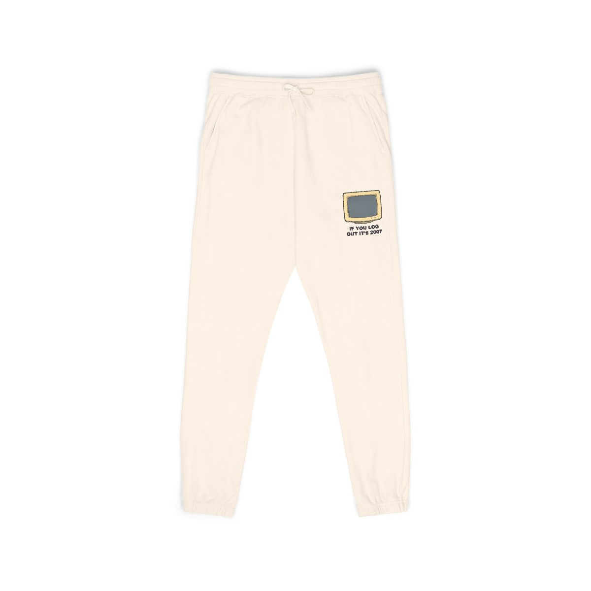
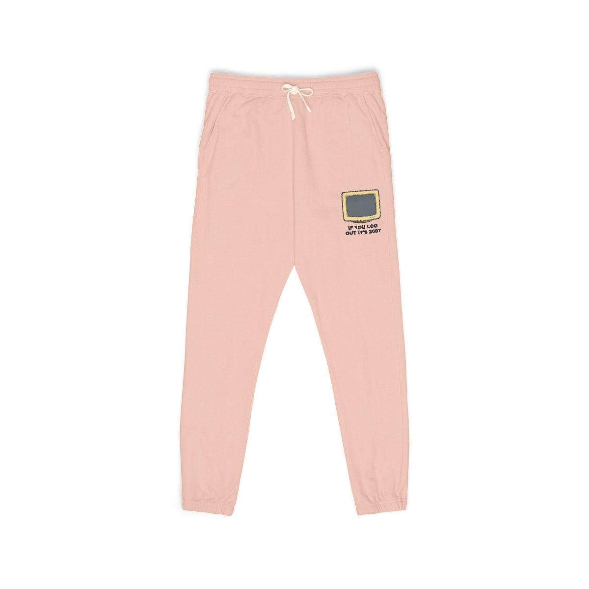

Funny Y2K Nostalgia Meme Sarcastic Retro Internet Gen Z Humor Sweatpants
Escape the modern internet hellscape and return to the golden era of clunky tech. If you log out right now, we can all pretend it's still 2007 and social media doesn't exist yet. Embrace the denial, it's cheaper than therapy. Available as a sweatpants.

